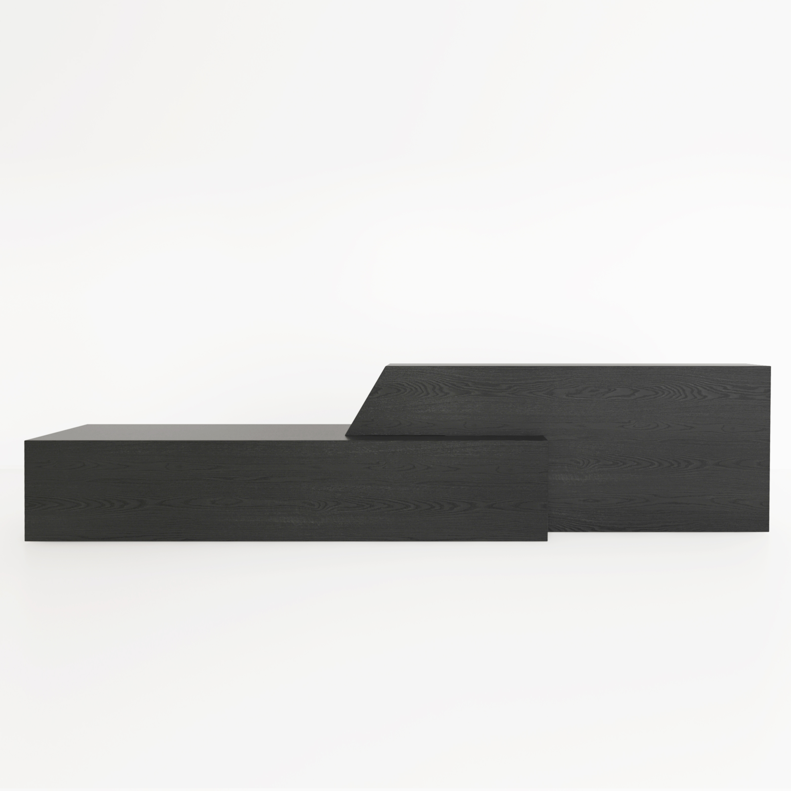
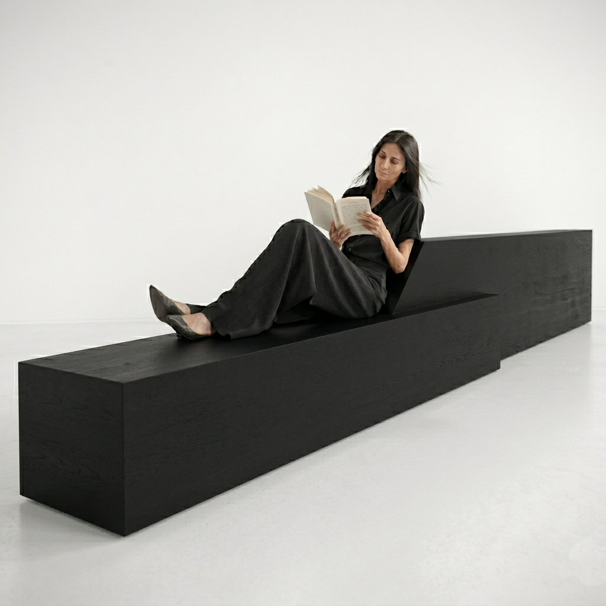
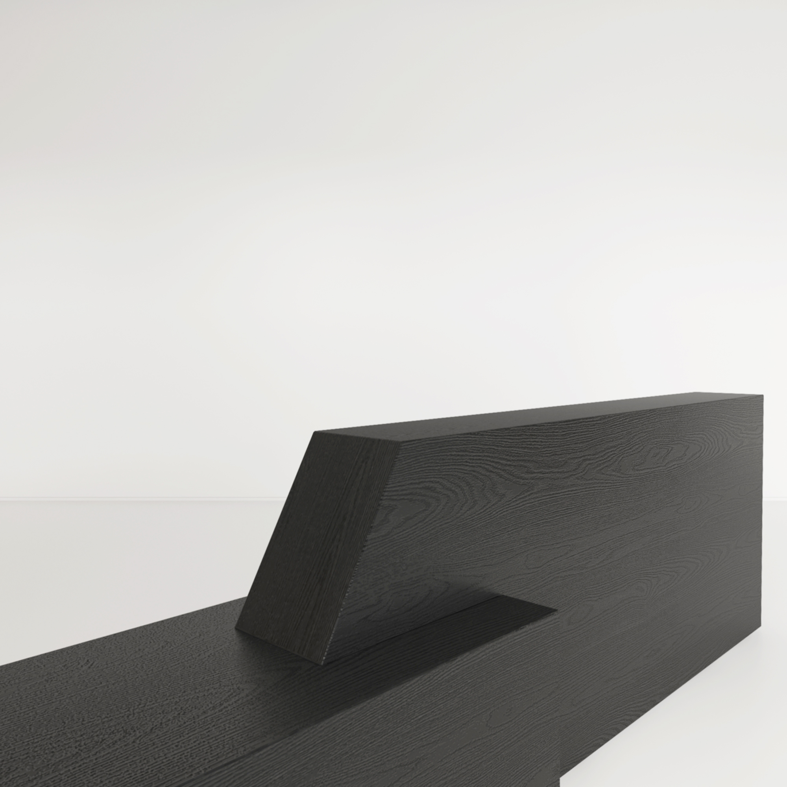
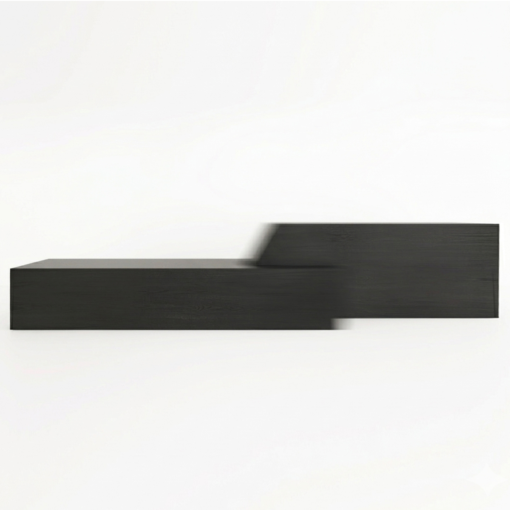
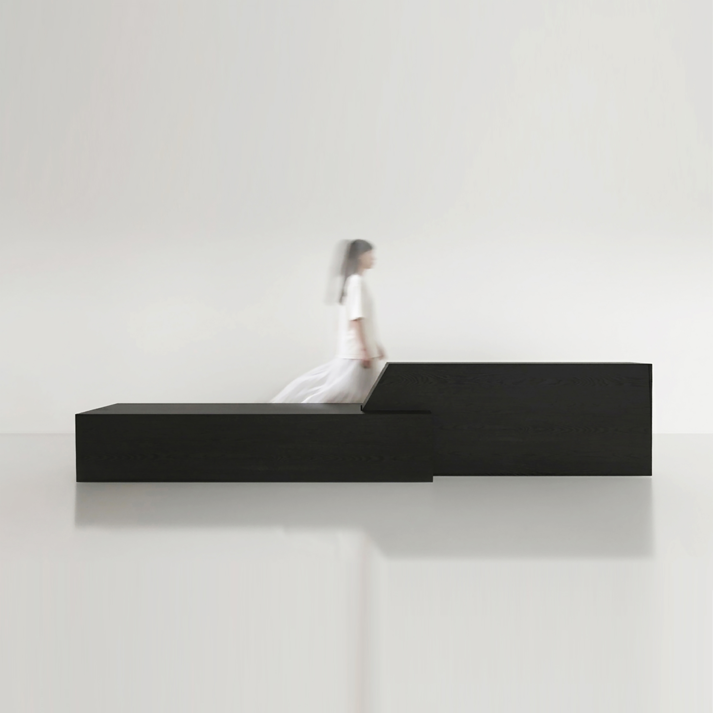

TRE
INFORMATION
4200 €
Category: folding bench with chaselounge and bar seating-reclining position
Target: indoor
Dimension: L. 2800-3200 mm x d. 400 mm x hs 390 mm / h 670 mm
Color: Black brushed / Natural Oak
Material: Solid oak wood and oil
Production: Made to order, 30 working days
Just as the wind shapes surfaces over time with persistence,
the line of this bench follows the natural logic of its material.
Light glides across the solid surface, revealing its texture—both raw and elegant.
Two connected elements, united by a gesture of movement
that transforms a simple line into a dynamic volume,
slide toward or away from each other,
adjusting the proportions of the object from 280 cm to 320 cm.
Three different perspectives within the space where it is placed,
and three distinct ways of use bench, lounge, and high seating.
Minimalist in form yet rich in material and function,
with the timeless beauty of solid wood, it exists calmly and
confidently as an architectural element that organizes the space around it.